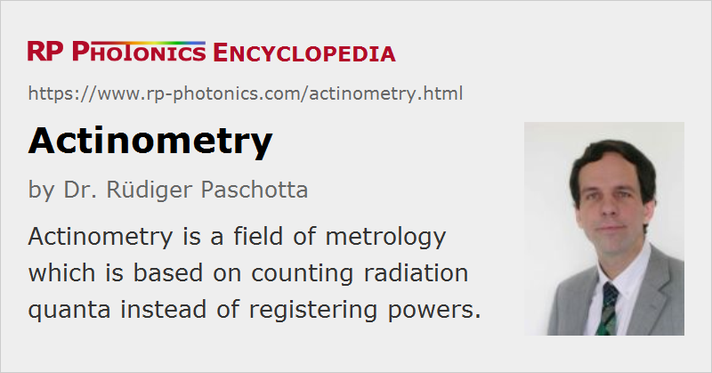

Actinometry
Definition: a field of metrology which is based on counting radiation quanta instead of registering powers
German: Aktinometrie
Categories: general optics, light detection and characterization
How to cite the article; suggest additional literature
Author: Dr. Rüdiger Paschotta
Actinometry is a field of optical metrology (or more generally radiation metrology) which is similar to radiometry; the difference, however, is that it does not refer to energies or powers but rather to the number of radiation quanta (photons in case of optics). For example, the actinometric quantity corresponding to the radiometric quantity radiant flux is the photon flux, which is the number of photons per second. Similarly, one can define a photon flux density (photons per second and unit area) corresponding to the radiometric quantity irradiance, which is also called flux density.
Historic Evolution of the Term Actinometry
The history of actinometry is somewhat confusing. The term actinometer has been introduced by John Herschel in 1825, long before the photon nature of light was discovered. Essentially, that instrument was made for measuring the thermal energy of sunlight, and not a photon flux. Herschel himself called it a “thermometer of great delicacy”.
Later on, however, chemical actinometers have been invented, where light induces photochemical reactions and afterwards one registers the amount of chemically converted material. For example, one may use a liquid solution of oxalic acid containing uranyl sulfate, where the oxalic acid is decomposed into carbon dioxide, carbon monoxide and water. The amount of decomposed oxalic acid can later be measured by titration with potassium permanganate. Because one can usually assume that each converted molecule is related to the absorption of a single photon, irrespective of its precise energy, a chemical actinometer is indeed suitable for measuring photon flux rather than light energy. It only must be ensured that the absorption efficiency does not substantially depend on the photon energy – for example, by using a thick enough layer of the substance to obtain near-complete absorption.
At some point, the original definition of actinometry was modified to obtain the modern meaning, referring to radiation quanta. The historical details are not known to the author.
Modern Techniques
Actinometric measurements can also be done with photodetectors such as photodiodes, if their quantum efficiency is approximately constant in the relevant spectral region. That method is of course far more convenient then using a chemical actinometer.
For the measurement of high energy radiation (gamma rays, alpha radiation etc.), one could use a cloud chamber with a photodetector for measuring the rate of registered particle events. For some kinds of radiation, a simple Geiger counter serves the same purpose.
Questions and Comments from Users
Here you can submit questions and comments. As far as they get accepted by the author, they will appear above this paragraph together with the author’s answer. The author will decide on acceptance based on certain criteria. Essentially, the issue must be of sufficiently broad interest.
Please do not enter personal data here; we would otherwise delete it soon. (See also our privacy declaration.) If you wish to receive personal feedback or consultancy from the author, please contact him e.g. via e-mail.
By submitting the information, you give your consent to the potential publication of your inputs on our website according to our rules. (If you later retract your consent, we will delete those inputs.) As your inputs are first reviewed by the author, they may be published with some delay.
See also: radiometry, photons
and other articles in the categories general optics, light detection and characterization
|  |
If you like this page, please share the link with your friends and colleagues, e.g. via social media:
These sharing buttons are implemented in a privacy-friendly way!